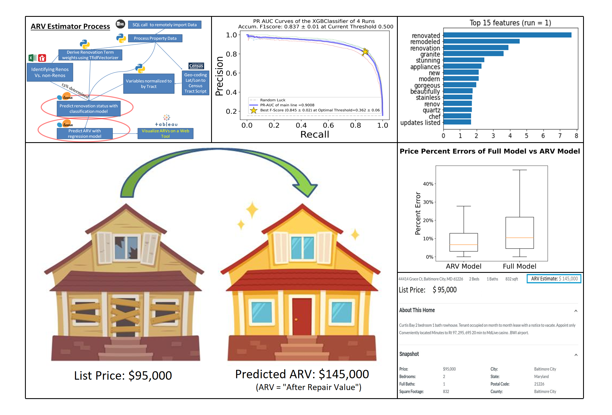
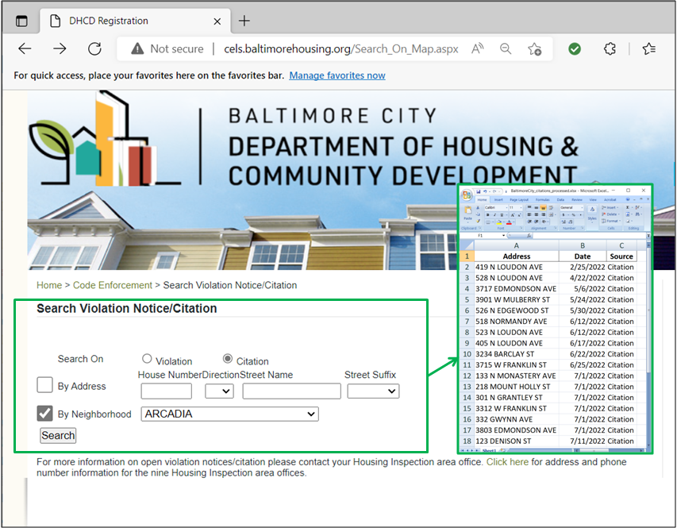
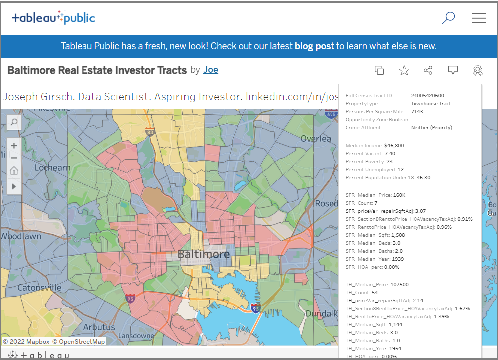
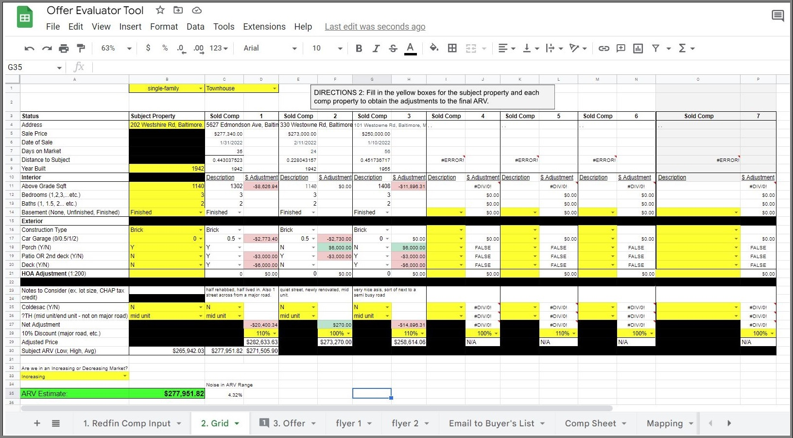

After Repair Value
Prediction Tool
This project will predict the After-Repair Values of properties in a database by using a series of processing steps.
The scripts in this repo will load real estate data from a remote SQL data base (alternatively an option to load from CSVs),
call the Census Data API to obtain their census tracts, enhance a binary renovation classification model by converting
descriptive text into variables using a Term Frequency-Inverse Document Frequency matrix, and use a regression model to
predict the After-Repair Values of each property.
*Patent Pending*

Baltimore Citations Web Scraper

This web scraper loops through the property citations for each neighborhood in Baltimore City and
stores them in an excel file. The scrapped results were used to conduct a 6-month marketing campaign
to the investor owners as part of the wholesaling business that my partner and I conducted from September
2021 to February 2022. We found that owners of vacant properties with multiple citations were
more likely to sell to investors. More information is available in the repo README file.

This Tableau presentation is the culmination of an extensive data analysis project
on individual Maryland property records aggregated and supplemented with other public sources.
The goal of the analysis was to quantitatively identify the
census tracts in Maryland that were optimal for property flipping (green tracts).
Metrics for identifying areas non-conducive for real estate investing such as
high crime areas (red tracts) or affluent areas (yellow tracts) were developed
using redfin data, zillow API, government census data, and price metrics.
Threshold tuning was optimized and validated with the help of local investors.
Metrics requested by investors are displayed on mouseover for each census tract.

This offer evaluator will calculator for the investor-user the Maximum Allowable Offer (MAO) that they should
make for an investment property that requires repairs. Through repeated practice in evaluating properties using
the comp analysis method, I found that price adjustments based on differences in comp attributes could be
consistently predicted on a percentage basis (For example, a property with a 1-car garage is consistently
3% more expensive than an equivalent property with no garage). I documented the percentage gains of the most
important of these attributes and implemented them in an easy-to-fill out grid to help investors determine
the maximum offer price for their investment deals.

My partner and I hosted the Kingdom Investors Club starting in January 2022. Together, we
used his background in the property flipping business and my background in data analytics to build a
a framework of investing principles and document them in a curriculum format. We shared this framework to
our local church community where we presented our findings and supported them with synergistic
biblical principles.